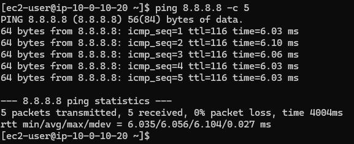
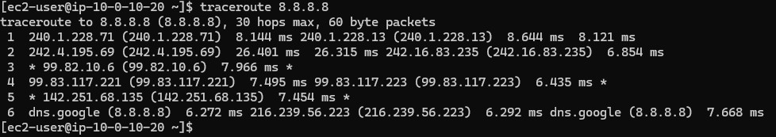

Layer 3
Network
ping & traceroute
Layer 3 dictates routing and IP addresses. These tools utilize ICMP (Internet Control Message Protocol) to verify that a target is logically reachable on the network.
$ ping 8.8.8.8 -c 5
Used to test raw connectivity. In an AWS scenario, testing an EC2 instance connection ensures security groups or Network ACLs are properly allowing ICMP echo requests.

$ traceroute 8.8.8.8
Used to identify routing latency or packet loss. If a customer reports a slow connection, traceroute reveals the path ("hops") taken. Packet loss at specific hops indicates whether the issue lies with the local ISP, intermediary networks, or the AWS destination. Three asterisks (***) indicate a failed hop.
